Depth that grows with the sequence.
Each token extends the recurrent path through the full decoder. After \(t\) tokens, that path traverses \(tL_D\) decoder blocks while the per-token block count stays fixed.
Hidden-state recurrence · Depth allocation · Length generalization
Recurrent computation across prompt and response.
Six algorithmic tasks, encoder–decoder depth allocation, and feedback-interval controls.
Recurrent Looped Transformer (RLT-1) feeds the previous token's final decoder state into the current token's decoder input through a gated merge. A causal encoder supplies token representations and global key–value memory, while the decoder maintains local sliding-window attention (SWA) caches. The recurrent path grows with sequence length at a fixed block count per token, and decoder updates remain sequential during training and prompt prefill. We compare five eight-layer encoder–decoder splits with a decoder-only Transformer on six algorithmic tasks, using three initialization seeds and shared training and test data. After training on at most 40 bits, the 5+3 and 7+1 splits reach 100% parity accuracy at 256 bits in all three seeds. On swaps-based permutation tracking at length 256, eight times the training length, 4+4 reaches 97.30±2.76% final-state accuracy, compared with 0.85±0.30% for the Transformer (mean ± sample standard deviation). With 5,000 training steps, RLT-1 also outperforms the Transformer on modular arithmetic at intermediate lengths. At 4+4 and length 64, removing the feedback (RLT-0) leaves parity and swaps tracking near chance. Updating it once per four-token chunk (RLT-2) lets known tokens run in parallel and keeps parity near 99%, but lowers swaps accuracy from 100% to 19.60%.
Each token extends the recurrent path through the full decoder. After \(t\) tokens, that path traverses \(tL_D\) decoder blocks while the per-token block count stays fixed.
Batch known-token encoder work and independent decoder updates. Reuse weights and memory, and checkpoint activations while preserving the reference computation.
Rebuild the full history under current parameters, including prompt states and decoder SWA KV. Keep recorded behavior probabilities tied to the actual sampler.
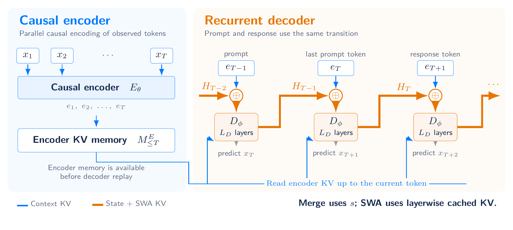
Here \(M_{\le t}\) is global encoder memory, \(s_t\) is the recurrent output, and \(C_t^D\) contains layerwise decoder KV. A SWA window of \(W\) includes the current token and retains at most \(W-1\) historical entries for the next update.
Compatible encoder and decoder attention and FFN weights can be shared. A tied 48+48 layout illustrates this option in the report; the experiments below use untied eight- and sixteen-layer layouts.
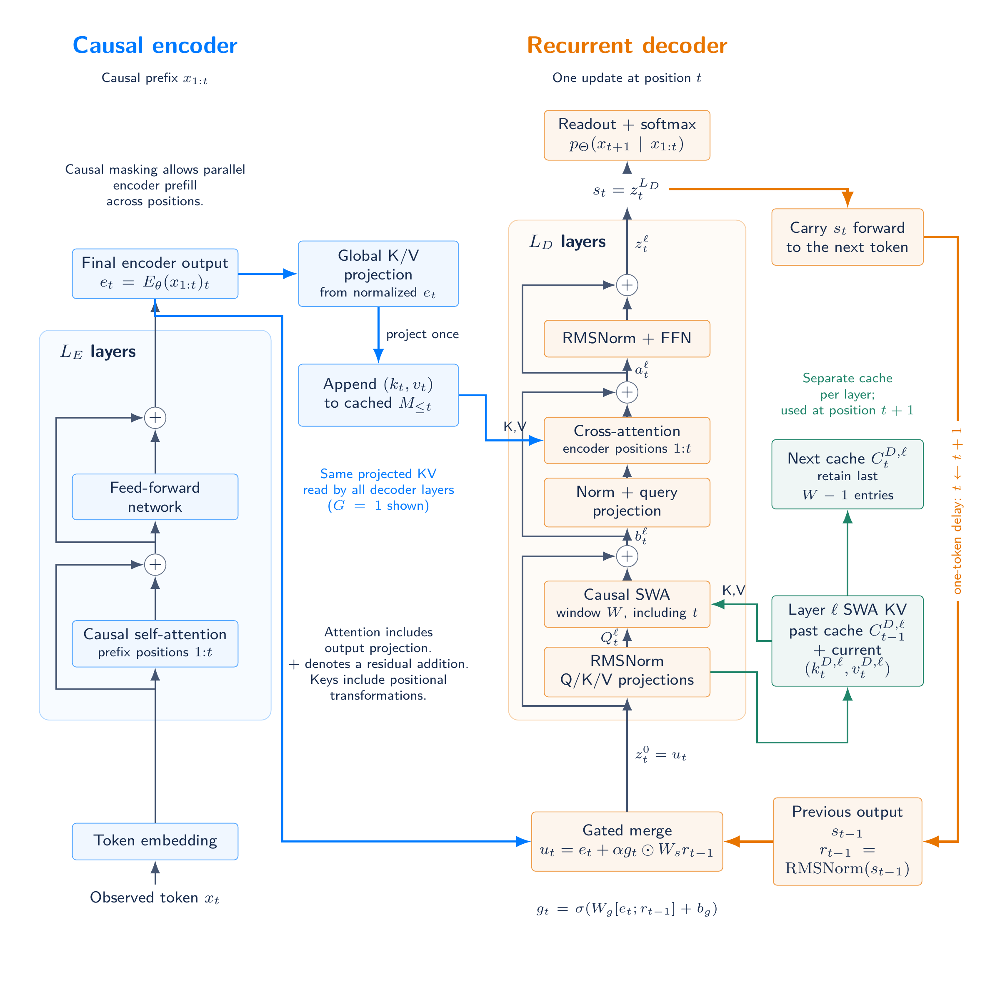
RLT-1 and its two controls differ in one quantity, the feedback interval \(B\): the number of tokens between updates of the state that enters the decoder input. RLT-1 updates this state at every token (\(B=1\)), RLT-2 once per chunk of \(B\) tokens, and RLT-0 never (\(B=\infty\)). All three keep the causal encoder, encoder memory, decoder SWA, prefix-restricted memory attention and readout of RLT-1.
RLT-2 holds the feedback state fixed within a chunk and replaces it with the chunk's last decoder output at a complete boundary. Each position merges its encoder output with this boundary state through its own gate, and known positions run together within each decoder layer under causal SWA and prefix-restricted encoder memory. Boundaries are anchored at BOS, and a partial chunk keeps the previous boundary state, so moving the prompt–response split does not change the computation. With \(B=1\), RLT-2 reduces exactly to RLT-1.

RLT-0 is the \(B=\infty\) limit. It removes the feedback path together with the learned initial state, state normalization, gate and feedback projection, and feeds \(z_t^0=e_t\) to the decoder. At each eight-layer split, it has 787,968 fewer parameters than RLT-1.
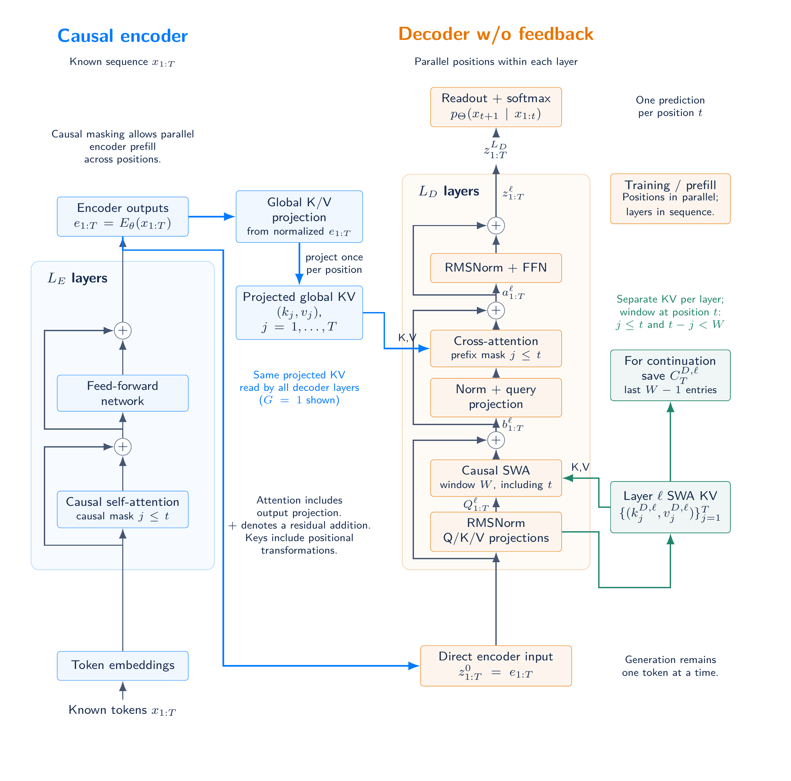
For a known prefix of length \(T\), the decoder needs \(\lceil T/B\rceil L_D\) sequential block stages: \(TL_D\) for RLT-1 and \(L_D\) for RLT-0. All three evaluate \(TL_D\) decoder blocks and generate one token per step.
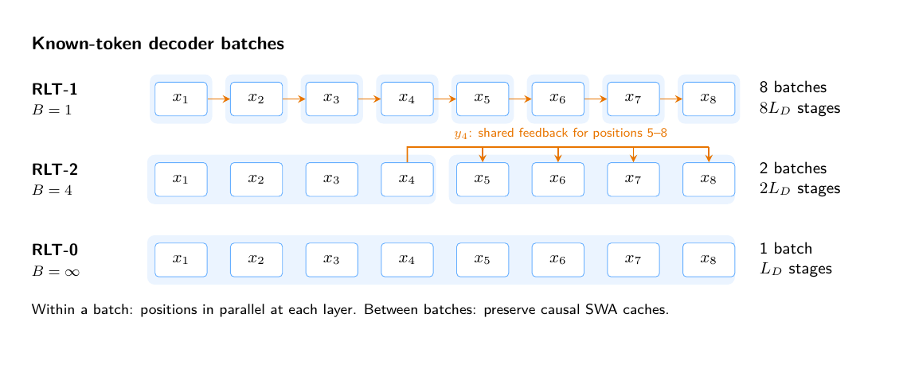
Because RLT-2 uses the same parameters for every \(B\), the chunk size can also vary during training: pretraining can start with large chunks for parallelism, and mid- and post-training can reduce \(B\) toward 1. The experiments train each chunk size from scratch.
Depth allocation · Feedback frequency · CPU step times · Addition and standard S5 · Complete six-task study · Sixteen-layer parity
The experiments ask how to allocate eight layers between the encoder and decoder, and how often to feed back the final decoder state. The six algorithmic tasks are addition, parity, modular arithmetic (mod 5) with and without brackets, and standard and swaps-based S5 permutation tracking. Every eight-layer comparison uses initialization seeds 42, 43 and 44 with shared training data and test sets, and reports mean ± sample standard deviation (SD, n = 3).
Models have width 512, FFN width 1,365 and four attention heads. RLT-1 uses an SWA window of eight, one encoder-memory group, feedback scale 0.1 and TBPTT 128, which covers every training sequence. In these comparisons, parity, addition and S5 train for 2,000 steps and mod 5 for 5,000. RLT-1 has 26.10–28.73M parameters and Transformer 8 has 25.31M, so equal layer counts do not match parameters or compute. Length generalization uses each run's checkpoint with the lowest in-distribution validation loss, taking the earliest step on ties, and evaluates 1,024 shared examples per length (256 operand pairs for addition).
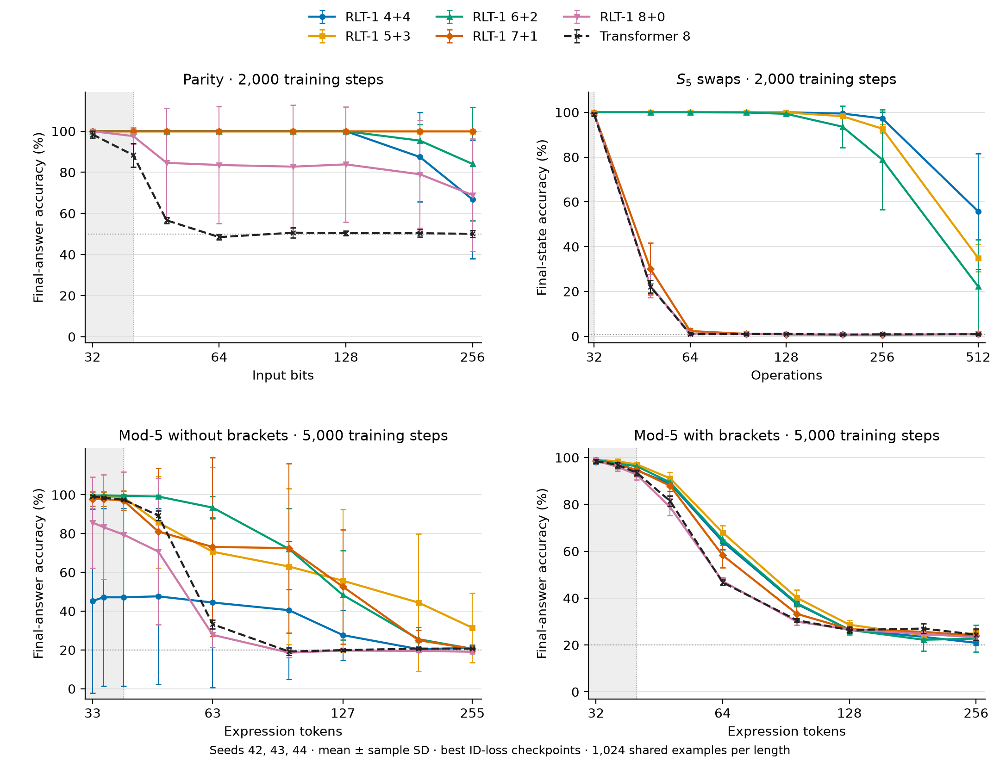
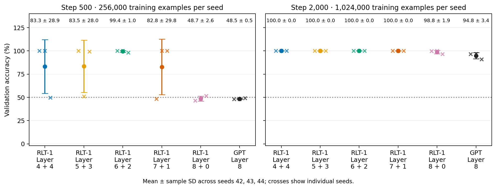
RLT-0 and RLT-2 with four-token chunks (chunk4) were trained at every split with the data, optimizer and seeds of the RLT-1 runs. RLT-2 has the same parameters as RLT-1.
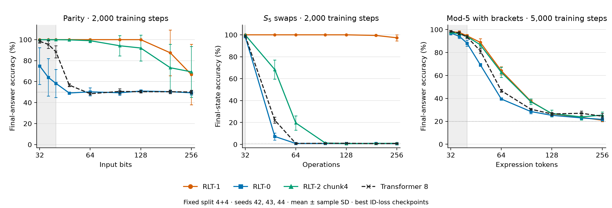
At 64 bits, RLT-1 reaches 100 ± 0% parity accuracy and chunk4 98.99 ± 1.66%, while RLT-0 stays near chance at 50.23 ± 3.80%. Swaps-S5 is more sensitive to the interval: at 64 operations, RLT-1 reaches 100 ± 0% and chunk4 19.60 ± 6.54%, and RLT-0 and the Transformer are near the 1/120 uniform reference. Relative to RLT-1, four-token chunks lose about one percentage point on 64-bit parity and about 80 points on 64-operation swaps-S5.
The effect of chunking also depends on the split. Chunk4 4+4 retains 69.34 ± 24.17% parity accuracy at 256 bits, whereas chunk4 7+1 and 8+0 are near chance at 64 bits. On swaps-S5, chunk4 5+3 reaches 79.92 ± 10.89% at 48 operations and 50.16 ± 18.77% at 64.
| Task / length | RLT-1 | RLT-0 | RLT-2 chunk4 | Transformer 8 |
|---|---|---|---|---|
| Parity / 64 | 100.00 ± 0.00 | 50.23 ± 3.80 | 98.99 ± 1.66 | 48.47 ± 1.18 |
| S5 swaps / 48 | 100.00 ± 0.00 | 7.26 ± 3.17 | 68.29 ± 8.75 | 22.10 ± 2.76 |
| S5 standard / 32 | 1.53 ± 0.46 | 1.20 ± 0.72 | 1.37 ± 0.87 | 0.91 ± 0.15 |
| Mod 5, flat / 63 | 44.43 ± 43.81 | 21.84 ± 2.17 | 50.78 ± 38.02 | 33.20 ± 2.33 |
| Mod 5, brackets / 64 | 64.10 ± 3.49 | 39.45 ± 0.61 | 62.76 ± 4.42 | 46.71 ± 1.21 |
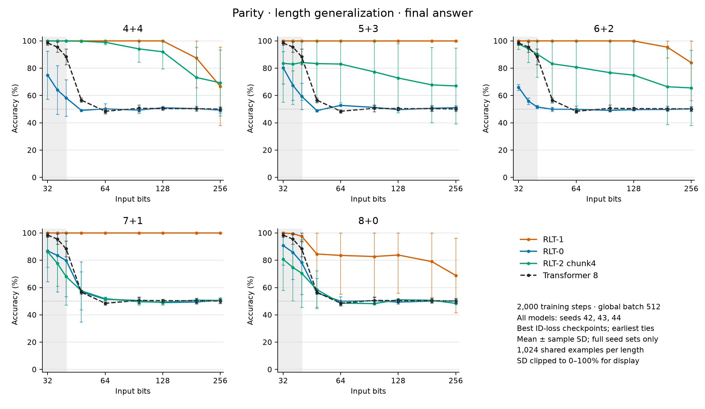
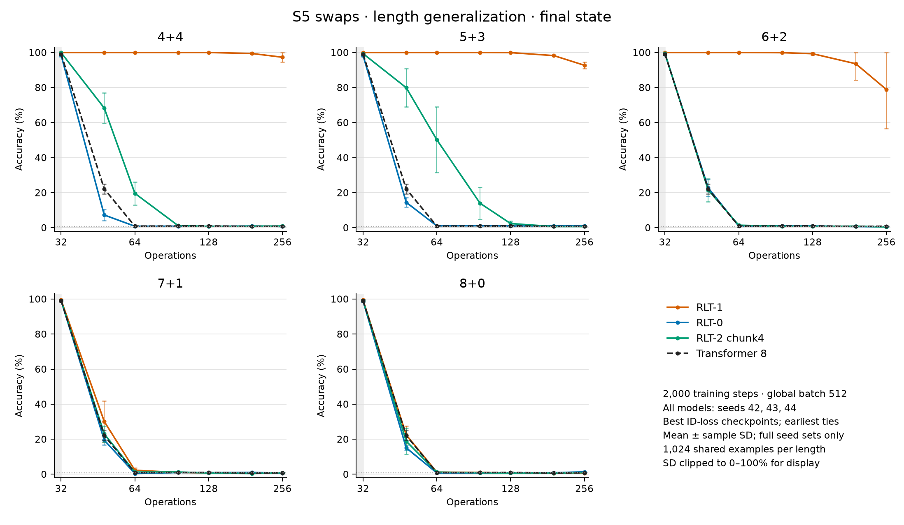
Standard S5 · Flat mod 5 · Bracketed mod 5 · Validation at 4+4 · All variant figures
Seed-42 mean seconds per step at 4+4, over steps 1,001–2,000 with four CPU threads and FP32 on a shared cluster. The averages exclude validation, checkpoint writes and logging.
| Model (4+4) | Flat mod 5: seconds/step | Bracketed mod 5: seconds/step |
|---|---|---|
| RLT-1 | 62.59 | 54.09 |
| RLT-2 chunk4 | 27.52 | 23.81 |
| RLT-0 | 14.54 | 12.98 |
Chunk4 training steps run 2.27× as fast as RLT-1 steps, and RLT-0 steps 4.17–4.30× as fast. These are CPU training steps; wall-clock speed on other hardware depends on the implementation.
All models reach 100% teacher-forced accuracy on 1–8-digit addition validation, but accuracy drops beyond eight digits; at 32 digits the eight-layer model means range from 14.89% to 16.84%. Standard S5 remains near the 1/120 reference across feedback variants. A seed-42 ablation of the feedback scale finds no reduction that improves addition accuracy at every width and split (figure). These experiments use supervised training; RL performance is not evaluated.
The September 17, 2026 snapshot compares RLT-1 4+4, 5+3, 6+2, 7+1, 8+0 and Transformer 8 on all six tasks. All 108 runs completed 2,000 optimizer steps with initialization seeds 42, 43 and 44 for every task. The 8+0 variant has no decoder blocks but still applies the gated recurrent merge.
Values are percentages, reported as mean ± sample SD across three initializations. Each run has consumed 1,024,000 training examples. Addition measures teacher-forced answer-token accuracy, including answer formatting and EOS, excluding prompt and padding positions. Parity and mod 5 score the final label; S5 scores the final state.
| Task | RLT-1 4+4 | RLT-1 5+3 | RLT-1 6+2 | RLT-1 7+1 | RLT-1 8+0 | Transformer 8 |
|---|---|---|---|---|---|---|
| Addition | 100.00±0.00 | 100.00±0.00 | 100.00±0.00 | 100.00±0.00 | 100.00±0.00 | 100.00±0.00 |
| Parity | 100.00±0.00 | 100.00±0.00 | 100.00±0.00 | 100.00±0.00 | 98.83±1.92 | 94.84±3.43 |
| Mod 5, no brackets | 45.36±46.43 | 94.18±7.29 | 69.62±33.01 | 70.01±43.15 | 60.33±35.70 | 64.02±37.64 |
| Mod 5, brackets | 70.53±10.75 | 74.35±6.71 | 74.87±3.72 | 74.78±3.01 | 75.17±6.78 | 73.87±9.07 |
| S5, swaps | 100.00±0.00 | 100.00±0.00 | 100.00±0.00 | 99.35±0.81 | 99.61±0.68 | 99.09±0.23 |
| S5, standard | 0.78±0.68 | 2.47±1.26 | 2.21±1.48 | 2.08±0.98 | 1.82±1.19 | 0.52±0.23 |
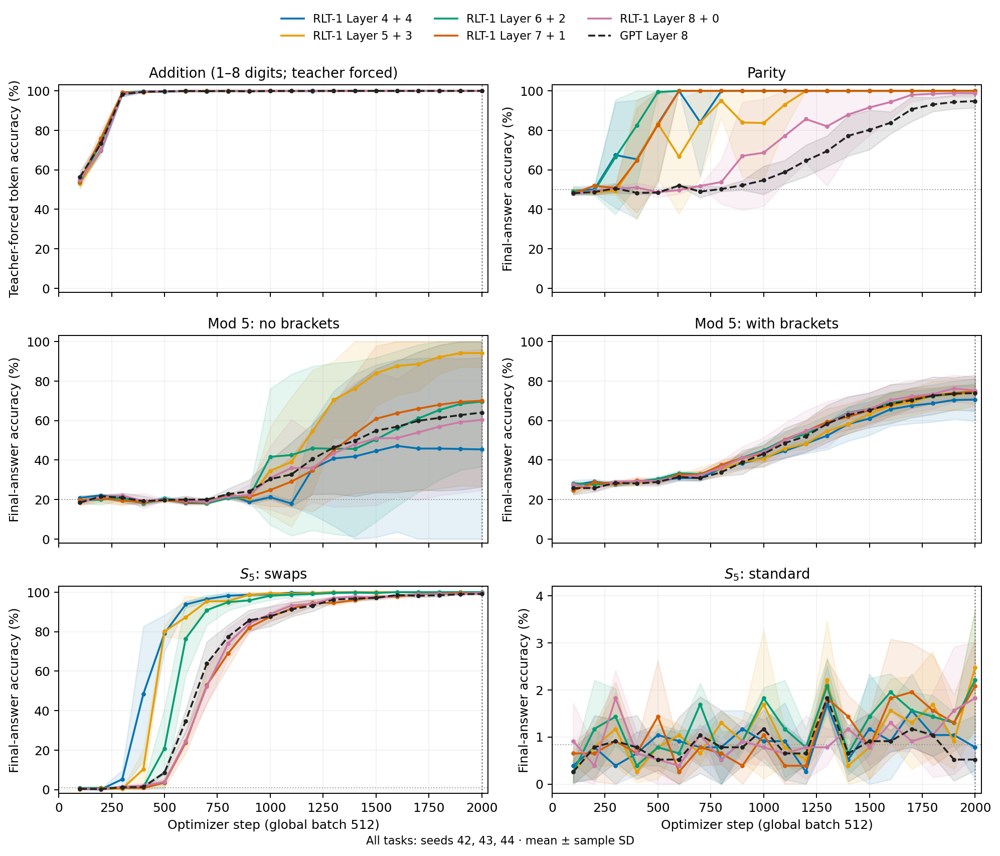
At 2,000 steps, flat mod 5 varies strongly with initialization: the three 4+4 seeds score 17.58%, 19.53% and 98.96%. Bracketed mod-5 means are closer, spanning 70.53–75.17% for RLT-1 versus 73.87 ± 9.07% for the Transformer. The 5,000-step runs above train both mod-5 tasks longer.
The evaluation covers 846 model–seed–length combinations, summarized as 282 three-seed means and sample SDs. At every task and length, all models and seeds receive the same 256 addition pairs or 1,024 formal-task sequences.
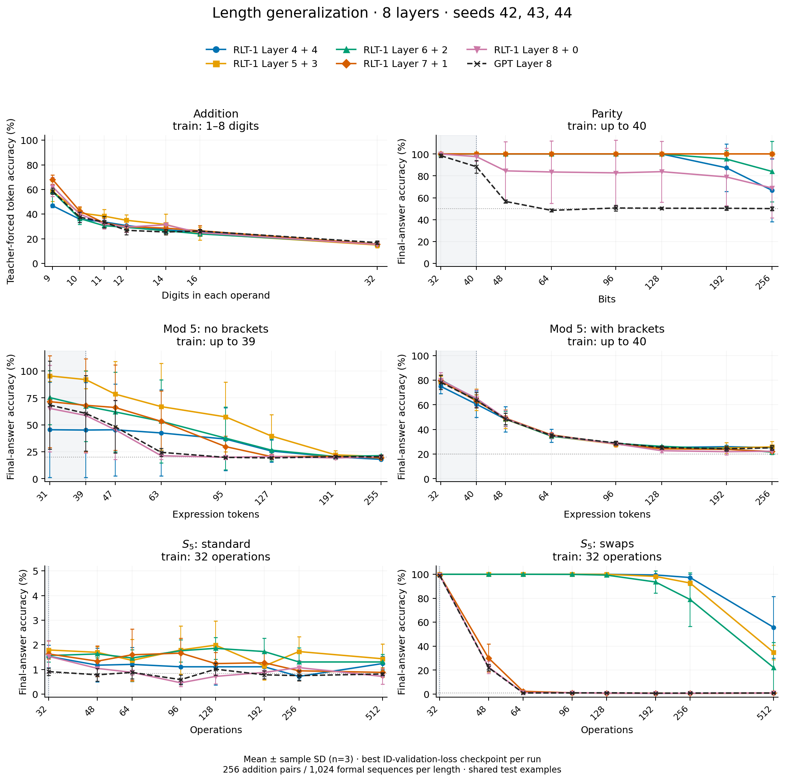
Accuracy at the longest tested length, in percent. Addition lengths count digits per operand; formal-task lengths count input symbols or operations, excluding boundary markers.
| Task (test length) | RLT-1 4+4 | RLT-1 5+3 | RLT-1 6+2 | RLT-1 7+1 | RLT-1 8+0 | Transformer 8 |
|---|---|---|---|---|---|---|
| Addition (32) | 15.30±0.44 | 14.89±2.27 | 15.74±1.58 | 15.59±1.57 | 15.31±0.93 | 16.84±1.45 |
| Parity (256) | 66.76±28.78 | 100.00±0.00 | 84.05±27.63 | 100.00±0.00 | 68.91±27.39 | 50.07±1.63 |
| Mod 5, no brackets (255) | 18.00±0.39 | 20.57±0.62 | 21.42±0.49 | 19.34±0.54 | 20.44±0.91 | 20.35±2.01 |
| Mod 5, brackets (256) | 25.20±1.71 | 25.81±4.34 | 21.58±1.86 | 22.04±1.72 | 22.30±1.13 | 25.07±2.05 |
| S5, standard (512) | 1.24±0.30 | 1.43±0.60 | 1.30±0.31 | 0.88±0.20 | 0.72±0.31 | 0.81±0.06 |
| S5, swaps (512) | 55.70±25.78 | 34.86±6.10 | 22.14±20.95 | 0.85±0.06 | 0.85±0.20 | 0.85±0.30 |
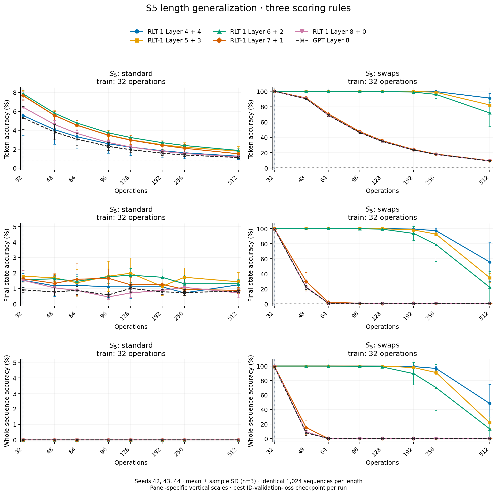
Training loss, individual parity seeds, fixed-length token accuracy, and token-level length generalization provide additional diagnostics. Depth-eight figures and protocol
A separate seed-42 series trains RLT-1 8+8 through 16+0 and Transformer 16 on parity lengths 3–40 with global batch 1,024. All ten runs completed 2,000 steps. Comparing each run's best in-distribution checkpoint with its step-2,000 checkpoint on the same 1,024 examples per length leaves 74 of 80 accuracies unchanged. 8+8, 9+7, 11+5 and 16+0 retain 100% at 256 bits at both checkpoints, compared with 49.41% for Transformer 16.
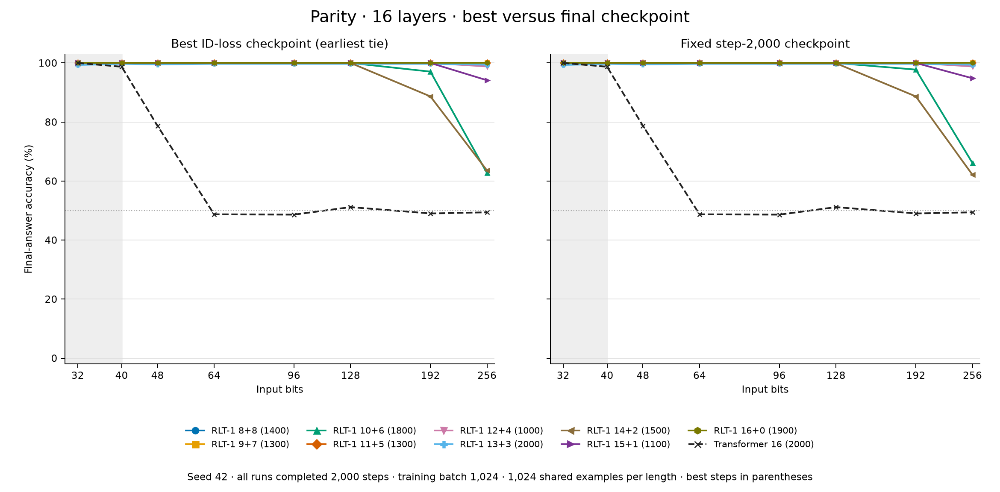
| Model | Best step | Best checkpoint | Step 2,000 |
|---|---|---|---|
| RLT-1 8+8 | 1,400 | 100.00 | 100.00 |
| RLT-1 9+7 | 1,300 | 100.00 | 100.00 |
| RLT-1 10+6 | 1,800 | 62.70 | 66.11 |
| RLT-1 11+5 | 1,300 | 100.00 | 100.00 |
| RLT-1 12+4 | 1,000 | 98.83 | 98.83 |
| RLT-1 13+3 | 2,000 | 99.41 | 99.41 |
| RLT-1 14+2 | 1,500 | 63.57 | 62.11 |
| RLT-1 15+1 | 1,100 | 94.14 | 94.82 |
| RLT-1 16+0 | 1,900 | 100.00 | 100.00 |
| Transformer 16 | 2,000 | 49.41 | 49.41 |
Earlier state-tracking results contributed by @AradhyeAgarwal use a separate implementation with about 79K parameters, three seeds and training length 32. Evaluation uses 2,048 test programs per task and length, extending to 128 operations.
Known tokens can be encoded in a causal batch. Decoder updates still proceed in token order, constructing both recurrent outputs and decoder SWA caches.
| Mode | Encoder | Decoder |
|---|---|---|
| Prompt prefill | Causal batch | Update complete state through every prompt token. |
| Generation | Incremental | Sample from the preceding state, then consume each token exactly once. |
| Pretraining | Causal batch | Full BPTT over all valid next-token targets. |
| SFT | Causal batch | Assistant-target loss; all context tokens update differentiable state. |
| RL replay | Rebuild with current weights | Replay the complete history and SWA caches; score each action before consuming it. |
Forward consistency and complete gradients are separate requirements. Full BPTT includes paths through recurrent outputs, decoder KV, and encoder memory. Detaching any of these changes the gradient. Parameter updates invalidate old caches for exact current-policy replay.
Behavior log-probabilities must describe the actual sampling distribution. Exact importance sampling additionally requires support coverage. Shared transitions remove structural prompt-boundary mismatch; numerical kernel parity and off-policy estimation remain separate concerns.
For the execution-level distinction, see the prefill–decode kernel mismatch note.
If you find this work useful, please cite:
@techreport{zhang2026recurrentlooped,
title = {Recurrent Looped Transformer},
author = {Zhang, Yifan and Feng, Jichen and Qin, Shihan},
year = {2026},
month = sep,
url = {https://github.com/yifanzhang-pro/recurrent-looped-tranformer}
}